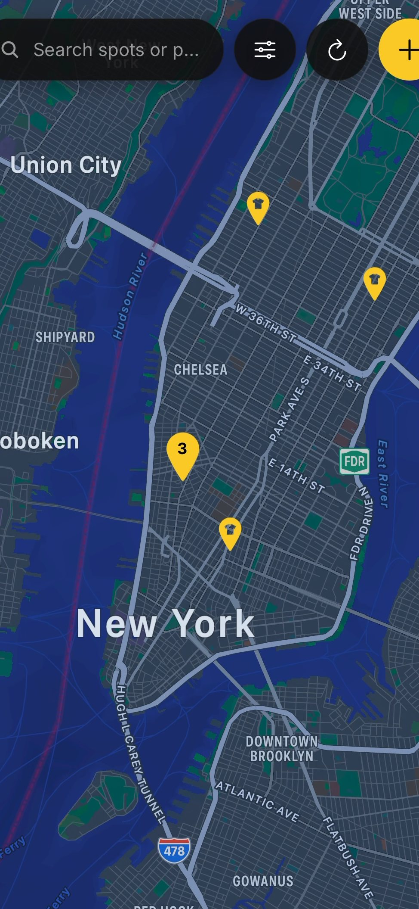
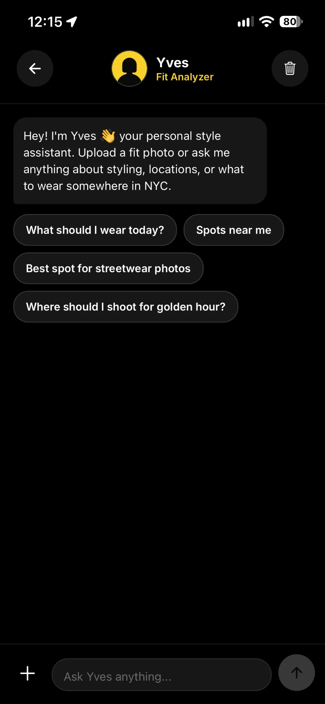
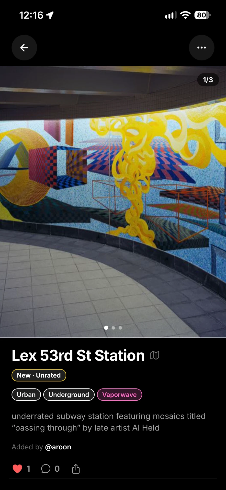
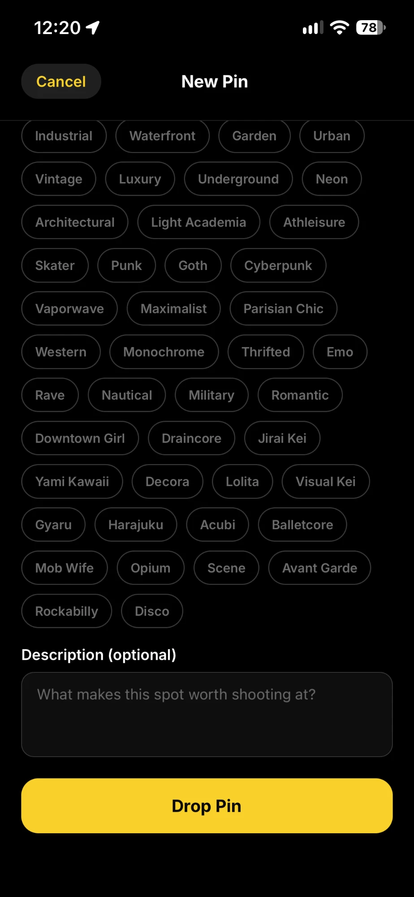
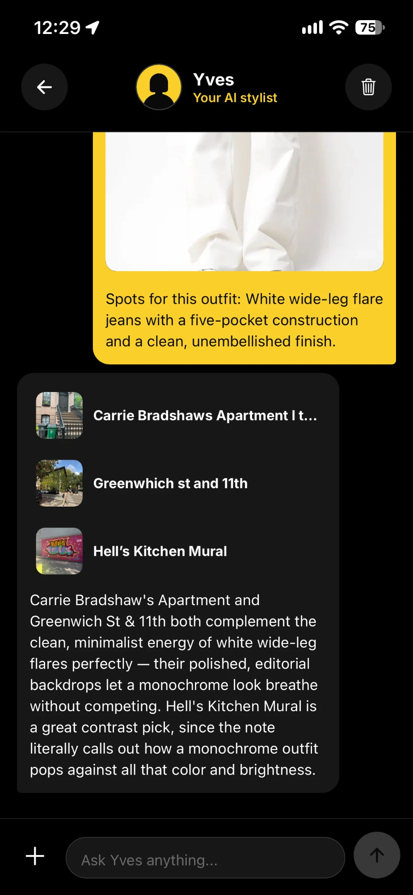
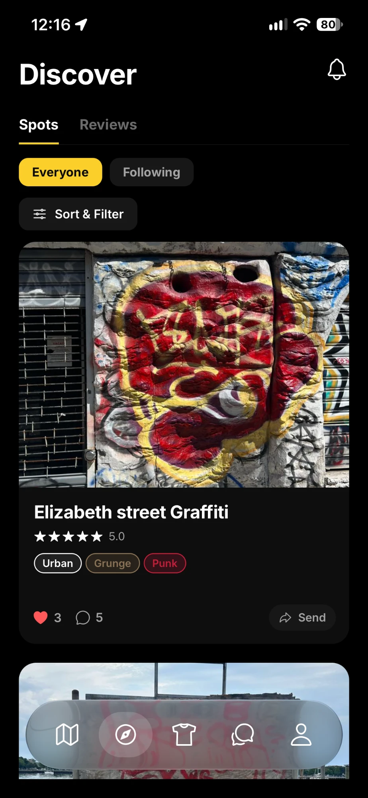

Find it
Browse the map or Discover for spots people have actually shot, rated and reviewed.

Browse the map or Discover for spots people have actually shot, rated and reviewed.

Tell Yves where you're going. You get an outfit built from your own closet.

Walking directions, the best light of the day, and other people's shots for ideas.

Found somewhere new? Drop a pin, add your photos, and put it on the map.
Your AI stylist. Add your clothes to your Closet, pick a spot, and Yves puts together a look from what you actually own.

Rate a spot, add your shots, and like or comment on everyone else's. It all lands on your profile.

See when the light is best at spots near you.
Send a link and it opens right on the spot.
Follow people whose taste you trust, find friends from your contacts, and plan shoots in group chats.
Level up as you add spots, write reviews and build looks. Show off your top three.
Landmarkd is in testing right now. Questions? Email us.